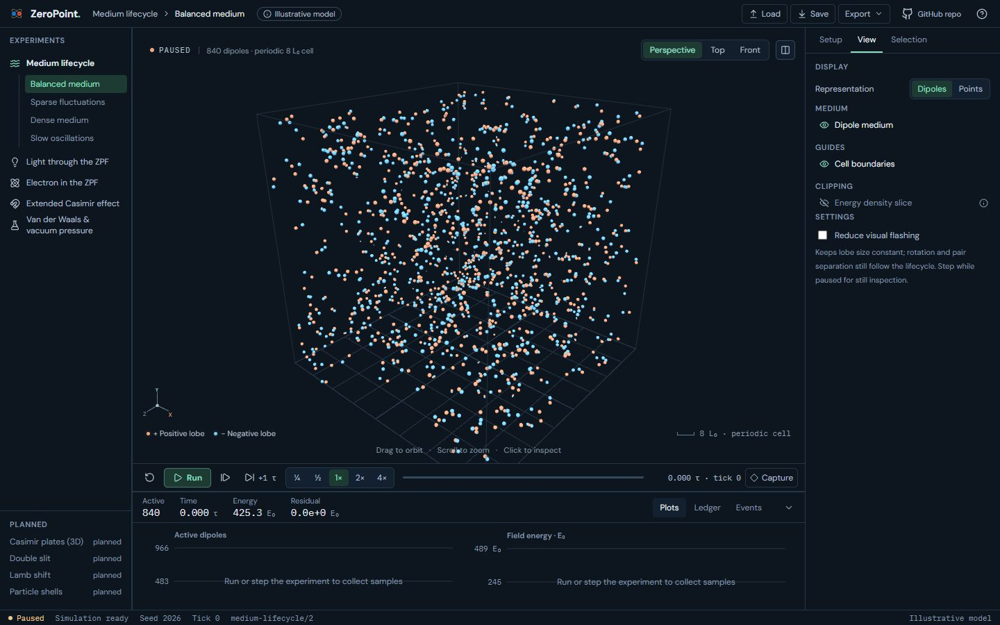
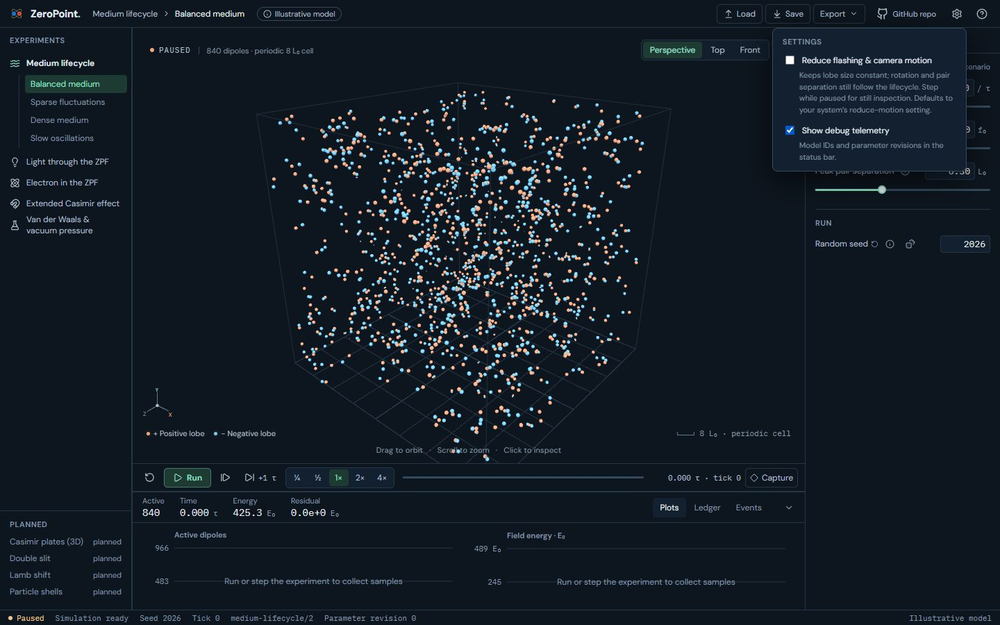
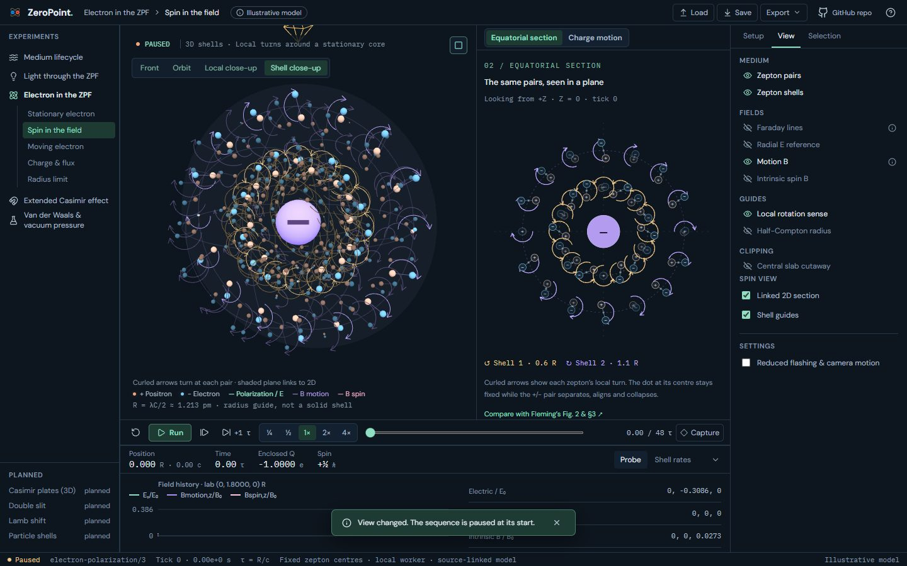
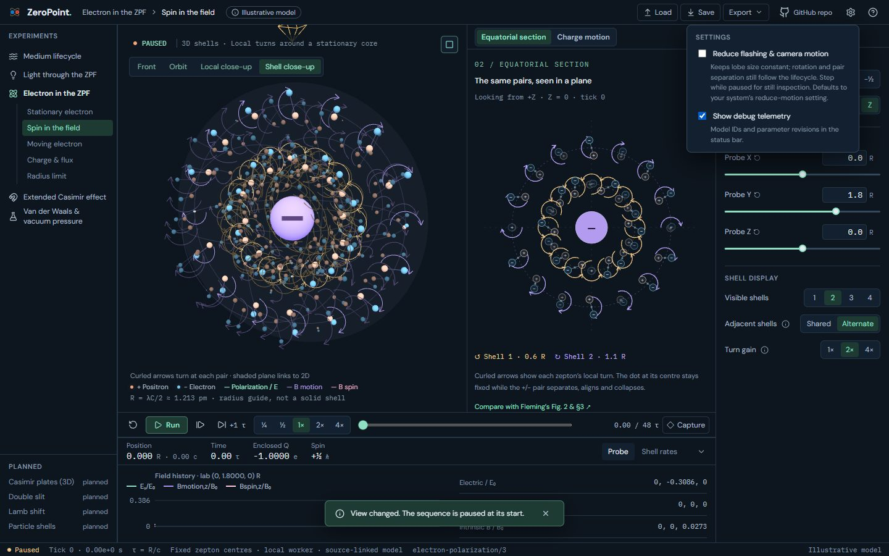

UI 14c · Global Settings: before and after
A Settings popover (the gear in the header) holds the two global settings. Reduce flashing & camera motion defaults to the system's reduce-motion preference and replaces the per-lab checkboxes in Medium, Light and Electron View; every lab follows it, including after a Load. Show debug telemetry puts model IDs and Medium's parameter revision in the status bar; they no longer show by default, and the revision leaves Medium's Ledger. Settings persist in browser storage. Medium's Drag to orbit hint now shows on the first visit only.
Real screens: "before" runs the layer below, and "after" runs this layer. Click an image to open it at full size. Regenerate with node scripts/compare-screens.mjs --before ../14b-infotips --out docs/ui-previews/14c-settings --set settings --title 'UI 14c · Global Settings' --description 'A Settings popover (the gear in the header) holds the two global settings. Reduce flashing & camera motion defaults to the system'''s reduce-motion preference and replaces the per-lab checkboxes in Medium, Light and Electron View; every lab follows it, including after a Load. Show debug telemetry puts model IDs and Medium'''s parameter revision in the status bar; they no longer show by default, and the revision leaves Medium'''s Ledger. Settings persist in browser storage. Medium'''s Drag to orbit hint now shows on the first visit only.'.
Medium · Settings (header), with debug telemetry in the status bar




Electron · Spin: Settings replaces the per-lab reduced-motion checkbox



